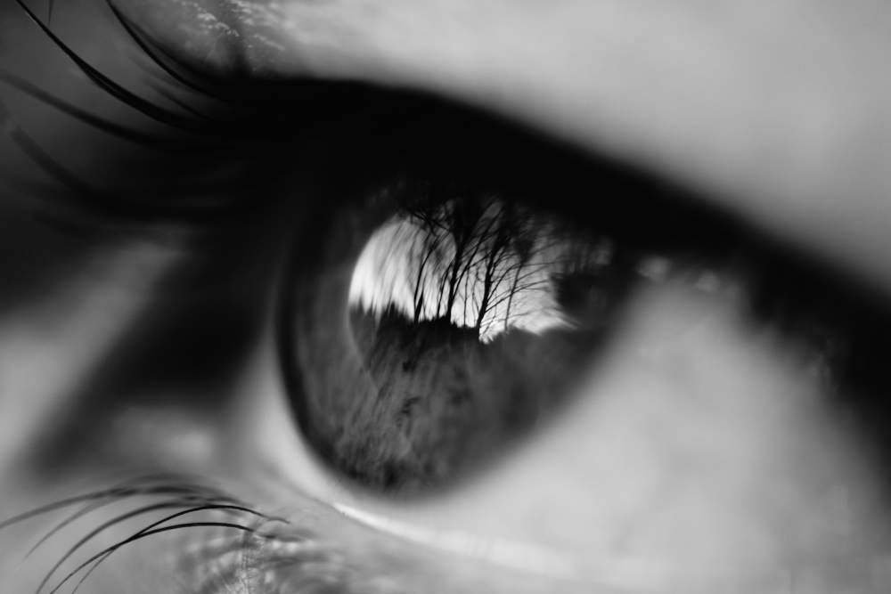

This app, Mindfulness: The Art of Being Human, has been developed by Reuben Lowe at Mindful Creation.
Mindful Creation is a social enterprise that develops and presents resources on the human mind and behaviour. Our purpose is to normalise the human condition, alleviate human suffering and advance human well-being.
Mindful Creation draw on a range of sources including contextual psychology, neuroscience, Buddhist psychology and other non-denominational spiritual approaches. Our aim is to present information about the human condition in a way that is simple, accessible and interesting.
VISION
Our vision is to inspire and empower one million people towards lasting patterns of mindful change.

MISSION
Our mission is to develop accessible resources to empower people with insights into the human mind and behaviour, in order to enhance meaningful connection, mindful change and self-growth.